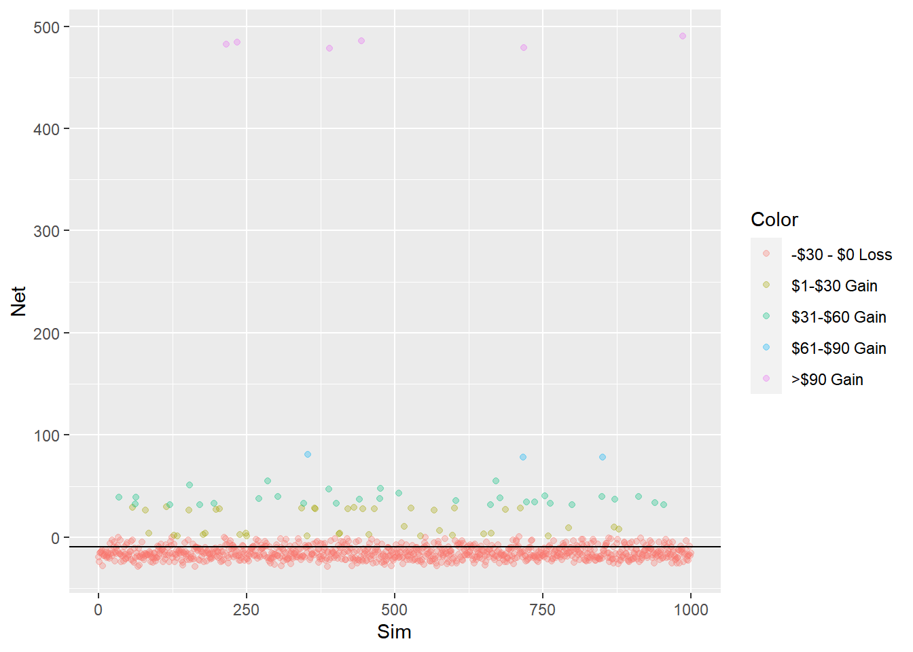
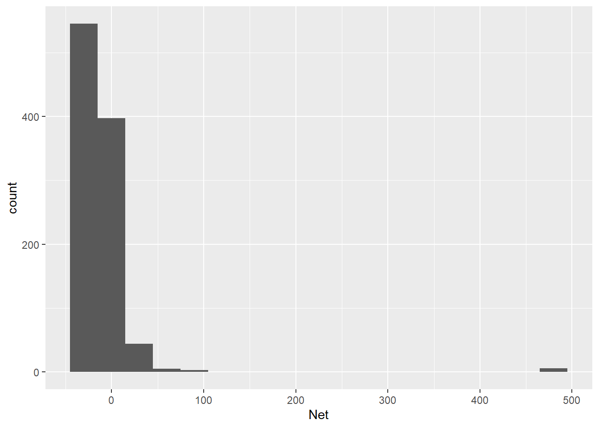

Chapter 8 Net Position After 30 Games
With an EV of 0 cents. we would expect to have $0 in our pocket after wagering $30 across 30 games. But no one plays Keno for the expected value, it is the big prizes that attracts players. So let’s play 30 games, 1,000 times, and see what our ending balances are after this defined gameset.
games <- 30
sims2 <- 1000
plays2 <- tibble()
for (i in 1:sims2) {
games_batch <- 1:30 %>% # for each sim
map_dfr(function(x) play_keno(spots)) %>%
summarise(Net = sum(Net)) %>%
mutate(Sim = i) %>% # calc cumulative sum
relocate(Sim)
plays2 <- plays2 %>%
bind_rows(games_batch) %>%
mutate(Color = factor(case_when(
Net <= 0 ~ "-$30 - $0 Loss",
Net > 0 & Net <= 30 ~ "$1-$30 Gain",
Net > 30 & Net <= 60 ~ "$31-$60 Gain",
Net > 60 & Net <= 90 ~ "$61-$90 Gain",
TRUE ~ ">$90 Gain" )))
}
ggplot(plays2, aes(Sim, Net, color = Color)) +
geom_jitter(alpha = 0.3) +
geom_hline(yintercept = mean(plays2$Net))
## `summarise()` ungrouping output (override with `.groups` argument)